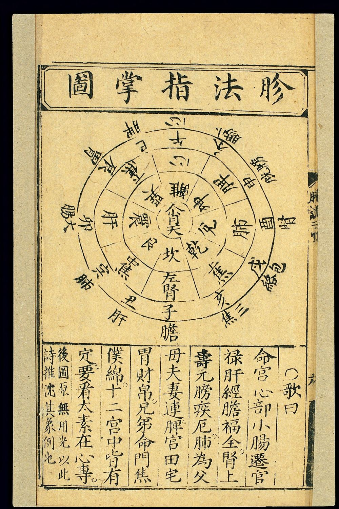
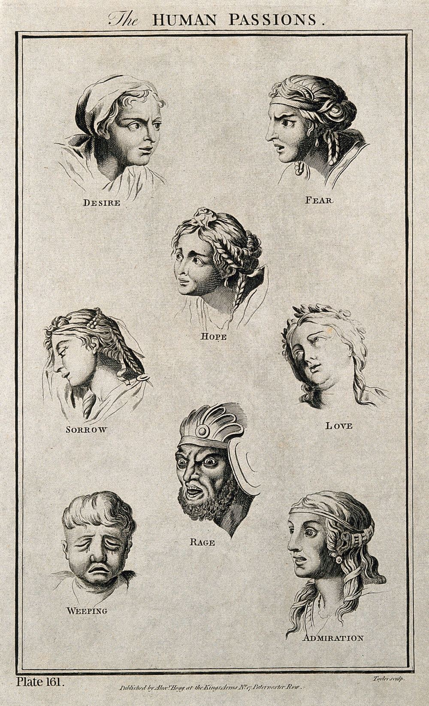
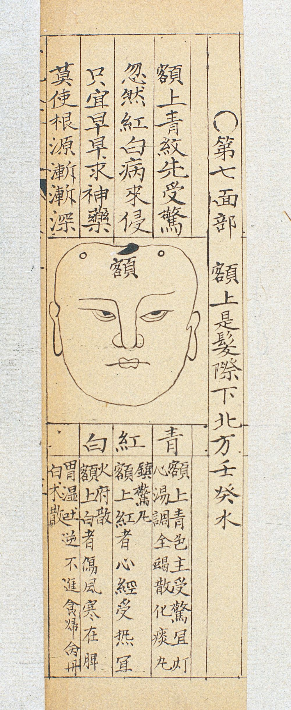
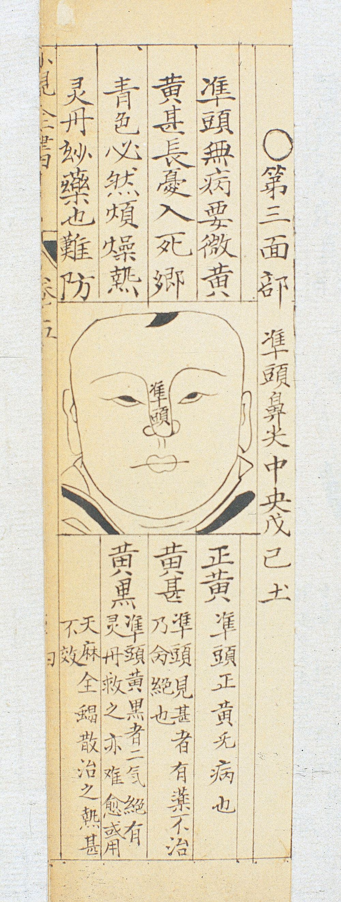
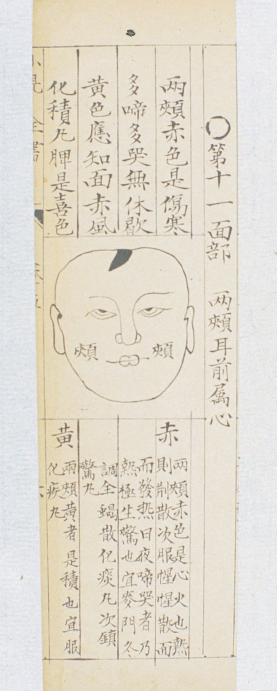
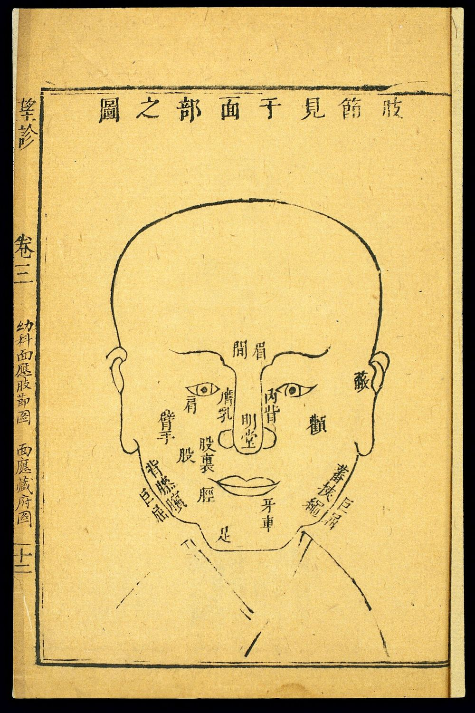
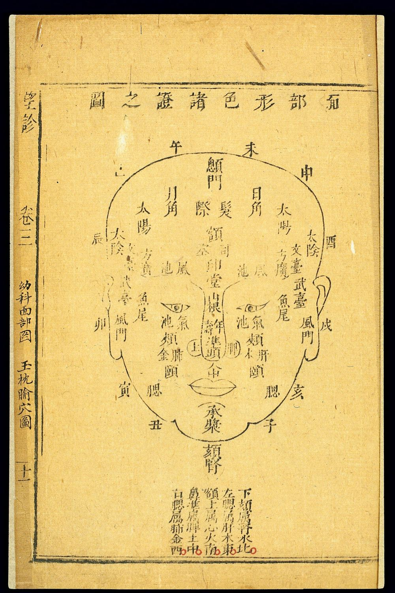
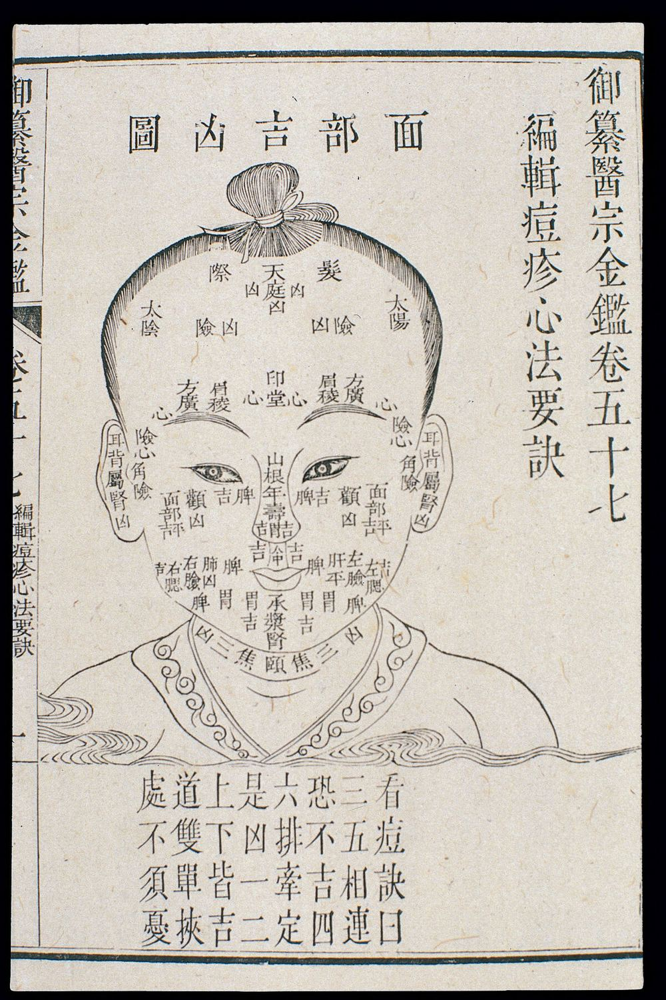

觀相識人自學講義 ・ 第二冊
面相結構
三停 ・ 五嶽四瀆 ・ 十二宮 ・ 五官 ・ 神與氣色
上停
中停
下停
自學講義・非任何付費課程內容
目錄
本冊導讀：一張臉，三種讀法
三停：把臉切成三段，又配上早中晚年
五嶽四瀆：把山川搬到臉上
十二宮：臉上的「人生分類索引」
五官：采聽、保壽、監察、審辨、出納
神：相書最看重、也最難說清楚的東西
氣色：相書的「運」，醫書的「色」，生理學的「循環與作息」
醫家對照：《靈樞》〈五閱五使〉〈五色〉與《素問》的望診
紋路、痣與「部位迷宮」
練習
常見誤解
反思題
一頁總結：完整面相部位圖
延伸閱讀
圖片來源
本冊的三種標記
全冊每一個部位都用三層來讀：相書原說 傳統相書怎麼主張（照實轉述，不等於我們相信）。合理成分 其中跟生理、作息、情緒、表情有關、說得通或有研究支持的部分。沒有證據／有風險 用臉預測命運、品德、婚姻、財運的部分，以及它可能造成的偏見與傷害。
版本說明：《冰鑑》引自維基文庫本（含民國簡沙侶抄本序、清吳榮光跋）。維基文庫署名「羅祖真人」，坊間又常說是曾國藩所作；吳榮光跋自己說「不著撰人姓名」，作者歸屬至今有爭議，本冊只稱《冰鑑》，不指定作者。《月波洞中記》《人倫大統賦》為宋金時期相書（四庫收錄）。
一、本冊導讀：一張臉，三種讀法
第一冊談的是「形」：臉型、手型分成木火土金水。這一冊往裡走一步，談相書怎麼把一張臉切成許多「部位」，每個部位各自負責人生的哪一塊。你會看到四套彼此重疊的地圖：
三停 ：額、鼻、下巴三段，配早年、中年、晚年。五嶽四瀆 ：額、鼻、兩顴、下巴是五座山；耳、眼、口、鼻孔是四條河。十二宮 ：命宮、財帛、兄弟……把人生十二個項目貼到臉上十二個位置。五官 ：耳、眉、眼、鼻、口各有「官名」，各管一件事。
再加上兩個「不是部位」的東西：神 （眼神與整體精神狀態）和氣色 （面色的明暗、潤枯與變化）。相書自己就承認，部位是死的、好講；神與氣色是活的、難講。
同一時期，醫家也在看臉。《黃帝內經》的《靈樞》有一篇〈五色〉，把鼻子叫「明堂」、眉間叫「闕」、額頭叫「庭」，在臉上畫出五臟六腑的對應區。這些名稱有不少跟相書共用。本冊會把兩家並排擺著看，看清楚兩件事：
部位劃分有共同的歷史淵源 ：同一套「把臉分區、看顏色」的觀察語彙，醫家拿去診病，相家拿去論命。目的完全不同 ：醫家望診是為了判斷「現在身體怎麼了、病往哪裡走」，而且要跟脈診、問診合參；相家是要從臉推斷「這個人的貴賤、壽夭、六親、財運」。前者至少在講可以變化、可以檢查的身體狀態；後者把外貌當成命運的刻度，這部分沒有科學證據。
先講清楚的立場
用臉預測性格、誠信或命運，目前的心理學研究不支持：人們從照片「看出」的可信度、能力、攻擊性，彼此之間雖然常常意見一致，但跟對方實際行為的關聯很弱，而且這種第一印象會被膚色、年齡、性別、長相刻板印象帶著走。本冊之所以仔細讀相書，是為了懂這套傳統在說什麼、哪些觀察其實是在看「狀態」（睡眠、疲勞、情緒、表情習慣），而不是為了學會替人貼標籤。真正要了解一個人，還是看他做了什麼、過去的紀錄、怎麼對待沒有利害關係的人。
醫家與相家：同一張臉，不同的問題
醫家望診（《靈樞》《素問》） 相家（《冰鑑》《月波洞中記》《人倫大統賦》） 問的問題 病在哪裡？輕重？往好還是往壞走？ 這人貴賤、壽夭、財祿、六親如何？ 看的重點 顏色、光澤（澤／夭）、浮沉、聚散、移動方向 骨相、部位形狀、紋痣、神、氣色 時間尺度 現在到近期（病程） 一生（骨相、三停）到三個月（氣色） 怎麼驗證 要跟脈診、問診合參；病好了色就退 多靠事後附會，很少能被反駁 今天怎麼看 部分觀察（面色蒼白、發黃、發紺）現代醫學也重視，但需檢查確認 當文化史讀；可借用「觀察狀態」的部分，不做預言
二、三停：把臉切成三段，又配上早中晚年
「三停」是後世相書最常見的入門框架：從髮際到眉毛是上停 ，從眉毛到鼻頭底部是中停 ，從鼻底到下巴尖是下停 。傳統說法認為三段長度「勻停」（大致相等）為佳，並且配上人生時序：上停主早年（約十五到三十歲）、中停主中年（約三十一到五十歲）、下停主晚年（五十一歲以後）。（「三停」一詞與這組年齡分段，在本冊能核對的三部相書中未見原文，屬後世相書如《神相全編》的通說，未能核對原典。）
髮際 眉 鼻底（準頭下） 下巴尖（地閣）
上停
髮際 → 眉
相書通說：主早年（約15–30）
中停
眉 → 鼻底
相書通說：主中年（約31–50）
下停
鼻底 → 下巴尖
相書通說：主晚年（51以後）
圖 2-1 三停分區示意（本講義自繪）。虛線是三停的分界：髮際、眉、鼻底、下巴尖。三段「勻停」是相書的理想；藝術解剖學也有類似的「三等分」比例，但那是畫人像的平均參考，不是好壞標準。
原文精讀（一）：《月波洞中記》的「八限」——早中晚年說的前身
本冊能核對的相書裡沒有「三停」這個詞，但《月波洞中記》有一套把臉從上到下排成「限」的流年法：耳、額、眉是初年，眼、鼻、上唇是中年，下唇、下巴是晚年。這正是後世「三停配早中晚年」的骨架。
眉耳額限初主，耳限八限之先。……以上三限者是初主。……眼限鼻限上為中主……此二限為中主。……下唇頦為末限……此二限為末主共十五年也。
《月波洞中記・卷下・論八限》（節錄，「……」為省略）
限 年限、運限。把一生分成幾段，每段由臉上某部位「值班」。
初主／中主／末主 主管初年、中年、末年。
頦 音「孩」，下巴。
眉、耳、額這幾限主初年，耳限是八限中最早的一限……以上三限主初年。……眼限和鼻限屬中年……這兩限主中年。……下唇與下巴是最後一限……這兩限主晚年，共十五年。
卷上還把每一限配了年數：「耳限十五年」「額限十年」「眉限四年」「眼限六年」「鼻限十年」「上下唇二十年」「頦限五年」。可見同一部書裡，年數分配並不平均，也跟後世「三停各管約二十年」的說法不同。這提醒我們：「哪個部位管幾歲」不是觀察出來的規律，而是不同作者各自排出來的系統。
原文精讀（二）：天、人、地
有天者貴，有人者壽，主富貴兩全。有地者富，豐滿重者，亦富貴兩全。
《月波洞中記・卷下・論八限》引《清鑒》
天、人、地 「三才」的觀念：頭額在上象天，鼻居中象人，下巴在下象地。後世相書把三停也叫「天、人、地三才」。
額頭（天）好的人主貴，鼻子（人）好的人主壽，兩者都好就富貴兩全；下巴（地）好的人主富，若豐滿厚重，也是富貴兩全。
解說：古人把宇宙「天、人、地」的分層，直接投影到臉的上、中、下。這是一種類比思維 ：額頭在上像天，所以管「貴」（官位、名聲）；下巴在下像地，所以管「富」（田產）。類比本身有文化上的美感，但它不是從觀察統計出來的。
相書原說 合理成分 沒有證據／有風險 三停勻停為佳；上停主早年、中停主中年、下停主晚年。額寬主少年得志，下巴豐厚主晚年有田產、有人照顧。
三段比例是描述臉型的實用工具，畫像、整形外科、牙科矯正都用類似的比例描述。下臉的長短會受咬合、牙齒、骨骼發育影響；年紀大了下臉軟組織下垂、牙齒脫落，下停的樣子確實會變——這是年齡改變臉 ，不是臉決定晚年。
「額窄早年不順」「下巴尖晚景淒涼」沒有任何證據，而且是倒果為因的典型：人們事後回頭找符合的部位。對孩子說「你額頭低，讀書不會好」是會造成實際傷害的標籤。
三、五嶽四瀆：把山川搬到臉上
中國傳統把五座名山稱為「五嶽」：東嶽泰山、西嶽華山、南嶽衡山、北嶽恆山、中嶽嵩山；把四條獨流入海的大河稱為「四瀆」：長江、淮河、黃河、濟水。相書把臉看成一幅小地圖：突起的是山，凹下、有孔竅的是河。
原文精讀：《月波洞中記・河嶽》
凡相人面，五嶽欲其相朝，四瀆欲其不混，形神備足，富貴相。所謂五嶽者，順為恒嶽，額為衡嶽，鼻為嵩岳，左顴為泰嶽，右顴為華嶽，所謂四瀆者，眼為淮，耳為江，口為河，鼻為濟。高成曰岳，深厚曰瀆，岳欲成而瀆欲清……
《月波洞中記・卷上・河嶽》
相朝 互相朝向、呼應，像群山拱衛中央。
不混 不渾濁、不混雜。
順為恒嶽 北嶽恆山。依位置排列，北嶽應是下巴（頦）；文本作「順」，疑傳抄之誤，本冊照錄原字。
衡嶽／嵩岳／泰嶽／華嶽 南嶽衡山（額）、中嶽嵩山（鼻）、東嶽泰山（左顴）、西嶽華山（右顴）。左右以被看的人自己為準。
淮、江、河、濟 四瀆：淮河（眼）、長江（耳）、黃河（口）、濟水（鼻，指鼻孔）。
高成／深厚 山要高聳成形，河要深而厚、清而不濁。
看一個人的臉，五嶽要彼此呼應，四瀆要清楚不混濁，形體和精神都充足，就是富貴之相。五嶽是：下巴為北嶽恆山，額為南嶽衡山，鼻為中嶽嵩山，左顴為東嶽泰山，右顴為西嶽華山。四瀆是：眼為淮河，耳為長江，口為黃河，鼻為濟水。高聳成形叫「嶽」，深厚的叫「瀆」；山要成形，河要清澈……
額＝南嶽衡山
鼻＝中嶽嵩山
左顴＝東嶽泰山
下巴＝北嶽恆山
右顴＝西嶽華山
眼＝淮
耳＝江
鼻孔＝濟
口＝河
▲紅：五嶽（宜高聳相朝） ○藍：四瀆（宜深、清、不混）
「左右」以被看者本人為準：對方的左顴，在讀者看來是右側。
圖 2-2 五嶽四瀆位置圖（本講義自繪，依《月波洞中記・河嶽》）。紅色三角是「嶽」，藍色圈是「瀆」。注意鼻子身兼兩職：鼻樑是中嶽，鼻孔是濟水。
同一部書，兩套方位
有趣的是，《月波洞中記》前面一篇〈九天玄微〉又用了另一套方位：
凡欲相人，先視其首。頭者，五臟之主，百體之宗，四維八方，並須停正。左耳為東方，右耳為西方，鼻為南方，玉枕為北方……
《月波洞中記・卷上・九天玄微》
要看一個人，先看他的頭。頭是五臟的主宰、全身的根本，四面八方都要端正勻稱。左耳是東方，右耳是西方，鼻子是南方，後腦玉枕是北方……
這裡鼻子是「南方」，而〈河嶽〉裡南嶽卻是額頭、鼻子是「中嶽」。兩篇說法互相矛盾，因為〈九天玄微〉是把整顆頭當成平面（前後左右），〈河嶽〉是只看正臉（上下左右）。這類「換個框架就換個答案」的情形，在相書中非常普遍。
《人倫大統賦》的總綱
四瀆須宜深且闊，五嶽必要穹與隆。五官欲其明而正，六府欲其實而充。一官成十年貴顯，一府就十載富豐。
《人倫大統賦・卷上》
穹與隆 拱起、隆起。
六府 後世相書多指兩頰上下的六塊骨肉（輔骨、顴骨、頤骨左右各一），說法不一，未能核對原典的定義。
四瀆要深而寬，五嶽要隆起；五官要清明端正，六府要結實飽滿。一個「官」長得好，主十年顯貴；一個「府」長得好，主十年富足。
相書原說 合理成分 沒有證據／有風險 五嶽高聳相朝、四瀆深清者富貴；任一嶽「陷」則某方面有缺。〈五嶽九州〉更說九州哪一州凹陷就「無地宅」「妨妻」「多官災」。
「整體協調」是審美上的真實感受：臉部對稱、各部位比例協調，常被評為較好看，研究也發現對稱與「看起來健康」的印象有關（但與實際健康的關聯很弱）。
把骨骼起伏對應到財富、官位、婚姻，沒有證據。「顴骨高剋夫」之類的說法，把一個天生骨骼特徵變成對女性的指控，是明顯的偏見。族群之間顴骨、鼻樑高低本來就有差異，用這套標準評人等於把族群外貌當成命運。
四、十二宮：臉上的「人生分類索引」
十二宮是今天最流行的面相框架，也是最難在早期原典中找到根據 的一個。它把人生分成十二個項目：自己（命宮）、錢（財帛）、手足（兄弟）、家產（田宅）、子女（男女）、下屬（奴僕）、配偶（妻妾）、健康（疾厄）、出外（遷移）、事業（官祿）、福氣（福德）、整體相貌或父母（相貌／父母），再各配到臉上一個位置。
原典核對結果
在本冊能取得的《冰鑑》《月波洞中記》《人倫大統賦》三部相書中，找不到「十二宮」一詞，也找不到命宮、財帛宮、疾厄宮等宮名作為面部分區的原文 。下面的位置與主張，是明清以後相書（如《神相全編》《麻衣神相》）流傳的通說，本冊未能核對原典 ，只用自己的話轉述。各家位置還有出入，例如第十二宮有的版本是「相貌宮」（指整張臉），有的版本換成「父母宮」（日月角）。
官祿宮 額中央（中正）遷移宮 額角兩側（邊地、驛馬）命宮 印堂（兩眉之間）兄弟宮 雙眉田宅宮 眉眼之間（上眼瞼）疾厄宮 山根（兩眼之間）財帛宮 鼻（準頭與鼻翼）奴僕宮 地閣兩旁父母宮 日角、月角福德宮 眉尾上方（天倉）妻妾宮 眼尾（魚尾、奸門）男女宮 眼下（淚堂、臥蠶）奴僕宮 （左右皆是）相貌宮 ：不是單一點，指整張臉的總體觀感（部分版本以「父母宮」取代）。位置依明清以後相書通說，各家略有出入；未能核對原典。成對的宮位只在一側標字。
圖 2-3 十二宮位置圖（本講義自繪）。紅點為宮位。你會發現十二宮擠在眉、眼、鼻周圍：整張臉真正「被分配」的地方，集中在表情最多、最先被看到的區域。
十二宮逐宮三層判讀
宮位・位置・相書原說 合理成分 沒有證據／有風險 命宮 （印堂，兩眉之間）。印堂寬平明潤，主心胸開闊、一生順；窄、有直紋、兩眉相連者主多憂、多阻。眉間是皺眉肌所在。常常皺眉（專注、焦慮、近視瞇眼、頭痛）會留下直紋——它記錄的是習慣表情 ，可以提醒自己放鬆、檢查視力。
兩眉相連（一字眉）是天生毛髮分布，跟品格無關。《月波洞中記》說印堂「狹而連」者「祖業破盡，妻子難為」，屬於典型的外貌貼標籤。 財帛宮 （鼻，尤其準頭、鼻翼）。準頭豐圓、鼻翼飽滿主聚財；鼻孔外露主漏財。鼻頭泛紅可能跟酒精、玫瑰斑（酒糟）、冷熱刺激有關，值得留意身體與飲酒習慣。
鼻型主要由遺傳與族群決定，「鼻孔外露漏財」沒有任何證據，用在擇偶、合夥上是歧視。 兄弟宮 （雙眉）。眉長過目、清秀主手足和睦；眉短、散亂、斷眉主手足少助。〈眼限〉另說「左眼有層紋者，一個兄弟」。眉毛是表情的主角（驚訝、擔憂、生氣都靠眉）。看眉的「動」比看眉的「形」更能讀到當下情緒。
眉的形狀與手足關係毫無因果。眉毛稀疏也可能是甲狀腺、皮膚病或拔眉習慣，不應被解讀成六親緣薄。 田宅宮 （眉與眼之間）。寬而豐主家產，窄而陷主祖業難守。上眼瞼的飽滿度會因睡眠、水腫、過敏、年齡而變；眼皮突然腫可以是身體提醒。
眼皮寬窄（單眼皮、雙眼皮、內雙）大多是遺傳與族群特徵，和房地產無關。 男女宮 （眼下，淚堂、臥蠶）。明潤飽滿主子女緣佳；晦暗、凹陷、亂紋主子女緣薄。《月波洞中記》說「上胞為父，下胞為子」。眼下發暗、眼袋浮腫常跟睡眠不足、過敏、鼻塞、哭泣、鹽分攝取有關，是觀察作息最直觀的地方之一。
把眼袋、黑眼圈連到生育與子女，沒有證據；對不孕或沒有孩子的人尤其殘忍。 奴僕宮 （地閣兩旁、下巴兩側）。飽滿主有人追隨、下屬得力；尖削主孤軍奮鬥。《月波洞中記》說下巴「豐滿及兩倉不陷，主莊田奴僕」。下顎線條受咀嚼肌、體重、牙齒咬合影響；咬牙習慣會使咬肌變大，這是行為留下的痕跡。
下巴形狀與領導力沒有關係。「方下巴＝有魄力」是大眾媒體也常有的刻板印象，研究顯示它會影響人們的選票與聘用決定——這正是要警惕的偏見。 妻妾宮／夫妻宮 （眼尾，魚尾、奸門）。平滿光潤主婚姻和諧；紋亂、凹陷主感情波折。《月波洞中記》說「奸門有白氣者，主妻有私通」。魚尾紋主要來自笑和瞇眼——常笑的人魚尾紋多。與其說它講婚姻，不如說它講一個人的笑的習慣 與日曬。
用眼尾紋路判斷配偶忠誠，既無證據，又可能引發猜忌與家庭衝突，是本冊特別要提醒的高風險用法。 疾厄宮 （山根，兩眼之間鼻樑起點）。山根高挺、無紋主少病；低陷、有橫紋、色暗主多病。《月波洞中記》說「山根若有紋者，初年遭苦」。這是十二宮中跟醫家最接近的一宮：《靈樞・五色》說「下極者，心也」，就是兩目之間。眼周、鼻樑處的膚色變化確實可能反映睡眠、鼻過敏、血液循環。
山根高低是骨骼與族群特徵（東亞人普遍較低），不能拿來判斷健康，更不能取代健康檢查。 遷移宮 （額角兩側，靠近髮際的「邊地、驛馬」）。豐滿主出外得利、宜遠行；凹陷主居無定所。《月波洞中記》談「驛馬骨」「人有四馬」。額角髮際後退與遺傳、年齡、荷爾蒙有關；太陽穴凹陷可能與體重下降有關，突然明顯變化可以留意營養與健康。
額角形狀跟出國、搬家、職涯變動沒有關聯。 官祿宮 （額中央，中正一帶）。額高廣、光潔主事業順、有官運；有凹陷、疤痕、亂紋主仕途多阻。《月波洞中記》說「額為祿學堂，其圓而正，主忠信」。額頭橫紋多來自常抬眉（驚訝、注意、想說服別人時）——也是習慣表情的紀錄。
額頭寬窄與職涯成就無關。招聘時「看面相」或「看額頭」會違反公平原則，也可能觸法。 福德宮 （眉尾上方，天倉一帶）。豐滿主福厚、晚年安樂；凹陷主勞碌。太陽穴附近的飽滿度跟體脂、年齡有關；年紀增長自然凹陷。
「福氣」無法定義也無法測量，所以這個說法根本無法被檢驗。 相貌宮 （整體）／父母宮 （日角、月角，額上兩側）。相貌宮看五官整體協調；父母宮主父母健康與助力。《月波洞中記》以左右耳不牢分主「妨父」「妨母」。「整體協調」是審美判斷，可以說「好看」，不能說「好命」。
「妨父」「妨母」之說會讓孩子背上「我害了爸媽」的罪名，是相書裡最應該放下的部分之一。

圖 2-4 〈胗（診）法指掌圖〉，清代木刻本。上半是八卦、地支與臟腑配成的同心圓；下半「歌曰」唱的是「命宮心部小腸遷，官祿肝經膽福全……財帛兄弟命門焦……十二宮中皆有定，要看太素在心尊」，把命宮、官祿、疾厄、父母、夫妻、田宅、財帛、兄弟、奴僕等十二宮名配到臟腑上，末句提到「太素」（以脈論貴賤的「太素脈」一派）。這張圖說明：十二宮名稱到了明清，已在命理、脈法、醫書之間互相借用，未必源於面相。來源：Wellcome Collection，Public Domain Mark。
原文精讀：命宮與疾厄宮的「前身」
印堂闊而平，二眉不相連，更蘭蘭台廷尉之處，皆朝大貴矣，主子孫顯達。若狹而連，主賤，不習好人，專習小輩，祖業破盡，妻子難為，又無實學，碌碌人也。
《月波洞中記・卷下・相印堂》
蘭台廷尉 鼻翼左右兩側的部位名稱（左蘭台、右廷尉）。原文「更蘭蘭台」疑有衍字，照錄。
朝 朝向、呼應。
小輩 品行低下的人。
印堂寬而平，兩眉不相連，鼻翼兩側也相應，都是大貴之相，子孫顯達。如果印堂窄而兩眉相連，就主低賤，不學好人、專學小人，敗盡祖業，妻兒受累，又沒有真才實學，是平庸之人。
山根不折，鼻樑不曲，常常明朗，晚年有祿，主妻賢淑，若是無肉，與人不足，可宜善守，不可與人交接。
《月波洞中記・卷下・相山根》
山根沒有斷折，鼻樑不彎曲，經常明亮開朗，晚年有俸祿，妻子賢慧。若山根沒有肉，與人相處就有缺憾，適合守成，不宜多與人往來。
解說：兩段原文都是「部位形狀 → 人生結論」的直接跳躍：眉毛連不連，跳到祖業與妻兒；山根有沒有肉，跳到能不能交朋友。中間沒有任何機制。這是本冊要練習辨識的句型——當一句話從「長相」直接跳到「命運」或「品德」，就把它放進第三欄。 但注意「常常明朗」四個字：它講的是光澤、精神，是會變動的「狀態」。這類字眼才是有機會放進第二欄的地方。
五、五官：采聽、保壽、監察、審辨、出納
後世相書把耳、眉、眼、鼻、口稱為「五官」，各給一個官名：耳為采聽官 （採集聲音）、眉為保壽官 （主壽命）、眼為監察官 （觀察）、鼻為審辨官 （辨別氣味）、口為出納官 （飲食出入、言語出入）。（這五個官名在本冊能核對的原典中未見，屬後世相書通說，未能核對原典。）
醫家的「五官」則完全不同：《靈樞・五閱五使》說的五官是鼻、目、口脣、舌、耳 ，對應肺、肝、脾、心、腎五臟——沒有眉毛，有舌頭。相書把舌換成眉，正好顯示兩家關心的重點不同：醫家要的是能反映臟腑的「竅」，相家要的是一眼就看得到、能拿來分等級的「相」。
監察官 眼靈樞：目者，肝之官也
采聽官 耳靈樞：耳者，腎之官也
保壽官 眉靈樞五官中沒有眉
審辨官 鼻靈樞：鼻者，肺之官也
出納官 口靈樞：口脣者，脾之官也
《靈樞》第五官是「舌」：
舌者，心之官也（看不到，
所以相書不收）
相書官名為後世通說，未能核對原典；醫家五官引自《靈樞・五閱五使》。
圖 2-5 五官名稱圖（本講義自繪）。紅字是後世相書的官名，小字是《靈樞・五閱五使》的五官—五臟對應。兩套「五官」名同實異。
1. 采聽官：耳
惟耳者主聲音之聽聞，為心腎之司牧。觀其形狀顏色，見乎休咎榮辱。垂珠朝海，必延算而餘財；偃月貫輪，終朝王而執玉。圓而成者和惠，偏而缺者慘酷。
《人倫大統賦・卷下》
司牧 管理者。說耳朵替心、腎兩臟管事。
休咎 吉凶。
垂珠朝海 耳垂（垂珠）下垂而朝向口（海）。
延算 延長壽命（算＝壽數）。
偃月貫輪 耳輪如仰臥的新月，輪廓貫通完整。
耳朵管聽聲音，是心與腎的管家。看它的形狀與顏色，可以看出吉凶榮辱。耳垂下垂朝向口的，長壽而有餘財；耳輪如新月、輪廓完整的，終將入朝為官。耳形圓滿的人溫和仁惠，耳形偏斜殘缺的人凶狠。
解說：醫家說「耳者，腎之官也」，這裡說耳「為心腎之司牧」，可以看出相書借用了醫書的臟腑對應。但醫家借耳看的是腎（例如《靈樞》說腎病者「顴與顏黑」，《月波洞中記・疾病五章》也說耳上「粥衣」與腎有關），相書則一路推到財富、官位、性格。「耳垂大＝有福」是今天最普及的面相說法之一，常見於佛像造型——但那是藝術與宗教象徵，不是觀察結果。
相書原說 合理成分 沒有證據／有風險 耳厚、垂珠、輪廓分明主壽與財；耳薄、反輪、無珠主貧孤。《月波洞中記》列出十多種耳形與詩訣。
耳朵是聽覺器官，留意聽力本身就是健康觀察。耳垂斜向皺摺（Frank 徵）曾被研究與冠心病風險有統計關聯，但結論不一致，只能當「可以問醫生」的線索，不能自我診斷。
耳形主要由遺傳決定，與壽命、財富無已知因果。耳朵畸形或配戴助聽器的人，不該被說成「福薄」。
2. 保壽官：眉
少年兩道眉，臨老一林鬚。此言眉主早成，鬚主晚運也。……眉尚彩，彩者，杪處反光是也。貴人有三層彩，有一二層彩者，所謂文明氣象。宜疏爽不宜凝滯，一望有乘風翔舞之勢者，上也；如潑墨者，最下。
《冰鑑・鬚眉章第五》（節錄）
早成／晚運 眉主少年的成就，鬍鬚主晚年的運氣——與「三停」上主早、下主晚的思路一致。
彩 光彩。原文自己定義：「杪處反光」，眉毛末梢的反光。
疏爽／凝滯 疏朗清爽／濃密糾結。
潑墨 像墨潑上去一樣一大片、看不出毛流。
少年時看兩道眉，老了看一把鬍子。意思是眉主早年成就，鬍鬚主晚年運氣。……眉毛重在有光彩，光彩是指眉梢的反光。貴人眉有三層光彩，有一兩層的，也算有文雅氣象。眉毛要疏朗清爽，不要濃密糾結；一眼望去有乘風飛舞之勢的是上等，像潑墨一樣一團的是最下等。
觀乎眉宇寬廣，心田坦平。狠愎者低凹其骨，狂狷者陡高其稜。粗厚愚魯，秀瑩慧明。短不及目者貧賤，長能過眼者寵榮。
《人倫大統賦・卷上》
眉宇寬廣的人，心地坦蕩。凶狠固執的人眉骨低凹，狂放的人眉稜陡高。眉毛粗厚的人愚鈍，秀氣光潤的人聰明。眉短不到眼尾的人貧賤，眉長過眼的人得寵顯榮。
相書原說 合理成分 沒有證據／有風險 眉清秀、疏朗、長過目、有光彩為上；粗濃、散亂、壓眼、短促為下。眉主少年、兄弟、壽。
「眉宇寬廣」常常其實是「沒有皺眉」——放鬆的人眉間舒展，焦慮或專注的人眉頭收緊。眉的動態 （皺、抬、壓）是辨識情緒最可靠的線索之一。眉毛末梢的光澤跟毛髮健康、皮脂有關。
眉形與聰明、狠毒、貧賤沒有關係，且今天眉形大量受修眉、紋眉影響，更無從論命。「眉毛脫落」可能是皮膚病或內分泌問題，需要就醫，不該被看成「壽短」。
3. 監察官：眼
欲察神氣，先觀目睛。賢良澄澈，豪俊精英。性端正者平視無頗，情流蕩者轉盼不寧。……睡眼神濁而如睡，驚眼神怯而如驚。病眼神困而如病未愈，醉眼神昏而如醉不醒。
《人倫大統賦・卷上》（節錄）
澄澈 清澈。
無頗 不偏斜。
轉盼不寧 目光轉來轉去、停不下來。
要看一個人的精神氣象，先看眼睛。賢良的人眼神清澈，豪傑的人眼神精明有英氣。性情端正的人平視不偏，心思浮蕩的人目光游移不定。……「睡眼」神濁像沒睡醒，「驚眼」神怯像受了驚，「病眼」神困像病還沒好，「醉眼」神昏像醉了沒醒。
心者，神明之舍，目其竅也。其神內守，而其明外鑒，故觀其眼可以知其心矣。
《月波洞中記・卷上・心隱》
心是精神居住的屋子，眼睛是它的窗口。精神在內守住，光明向外照見，所以看眼睛就能知道他的心。
解說：這兩段很值得細讀。「睡眼、驚眼、病眼、醉眼」其實是四種狀態 的精準描寫——睡不夠、受驚、生病、喝醉，都會讓眼神改變。這是相書裡最貼近現實觀察的段落。問題出在下一步：相書把「此刻的狀態」當成「一輩子的本性」。一個連續加班三天的人，眼神「濁」是因為累，不是因為賤。
相書原說 合理成分 沒有證據／有風險 眼神清澈、平視、黑白分明為貴；斜視、游移、露白（三白、四白）、紅絲貫睛為凶。〈心隱〉更把眼形分五行，說「臥弓之目」「殺君殺父」。
睡眠剝奪的實驗發現，熬夜後的人在照片中被評為較疲倦、較不健康（眼瞼下垂、眼睛紅、眼下暗沉）。眼神是否專注、是否迴避，也確實反映當下的情緒與投入程度——但要放在情境裡看。
斜視、眼球突出、眼白露出較多，很多是醫學狀況（斜視、甲狀腺眼疾）或天生眼型，把它們說成「凶」「淫」「殺」是嚴重的歧視。「不直視就是說謊」也是被研究否定的迷思：說謊偵測研究顯示，凝視迴避並不是可靠的說謊指標，而且文化差異很大。
4. 審辨官：鼻
惟鼻者號嵩岳，以居中為天柱而高矗。樑貴乎豐隆貫額，色貴乎瑩光溢目。竅小慳劣，頭低孤獨。……青黑多凶，黃明廣福。
《人倫大統賦・卷下》（節錄）
天柱 撐天的柱子。鼻居臉中，像撐起整張臉。
貫額 鼻樑一路通到額頭（即「伏犀」）。
瑩光溢目 光亮潤澤，耀眼。
慳劣 吝嗇低下。
鼻子被稱作嵩山（中嶽），居臉的中央，像天柱一樣高聳。鼻樑貴在豐隆並直通額頭，顏色貴在光潤明亮。鼻孔小的人吝嗇，鼻頭低的人孤獨。……鼻色青黑多凶，黃而明亮多福。
解說：留意後半「色貴乎瑩光溢目」「青黑多凶，黃明廣福」——又一次，相書把顏色 和形狀 混在一起講。鼻子在《靈樞》裡就是「明堂」，是醫家望色的中心（第八章詳談）。相書的「黃明」對應醫家的「明堂潤澤以清」，都是健康的樣子；但相書把它延伸成「廣福」。
相書原說 合理成分 沒有證據／有風險 鼻為財帛宮、中嶽；鼻樑高直、準頭豐圓主富壽；鼻孔小主吝、露主漏財；鼻有節、曲主波折。
鼻頭泛紅、微血管擴張可能與酒精、酒糟性皮膚炎、溫度有關；鼻塞、過敏會連帶眼下發暗。這些都是可觀察、可就醫處理的狀態。
鼻型高度依族群而異，「鼻樑高才貴」的標準其實是特定審美。用鼻孔判斷吝嗇與否毫無證據，而且鼻型可能因外傷或先天疾病改變。
5. 出納官：口
惟口者語言之鑰，是非之關，禍福之所招，利害之所詮。端厚寡辭者定免乎辱，誹謗多言者必招其愆。
《人倫大統賦・卷下》
鑰／關 鑰匙、關口。口決定說不說、怎麼說。
詮 評斷、解釋。
愆 音「千」，過失、罪過。
口是語言的鑰匙、是非的關口，禍福由它招來，利害由它說定。端正厚重、話少的人一定能免於受辱；好毀謗、話多的人一定招來過失。
言者，心之聲也。靈氣漏露，發而成響，神靜則辭寡，神躁則辭多，是以既察之於目，又驗之於口。
《月波洞中記・卷上・心隱》
言語是心的聲音。內在的靈氣洩漏出來就成了聲響。精神安靜的人話少，精神躁動的人話多。所以既要看他的眼睛，又要聽他怎麼說話。
解說：這兩段幾乎不在講「口的形狀」，而在講說話的行為 ：是否誹謗、是否多言、說話時的心境。這正是本系列一直強調的替代方案——看行為，不看長相。相書自己也說「既察之於目，又驗之於口」：光看臉不夠，要聽他說什麼、怎麼說。
相書原說 合理成分 沒有證據／有風險 口方唇厚、唇紅齒白、開大合小為貴；唇薄、口尖、嘴角下垂為賤或刻薄。《冰鑑》說「口闊而方祿千鍾」。
說話的內容與方式（是否背後說人、是否守信、是否打斷人）是判斷一個人最有用的資料。嘴唇發紫、蒼白、乾裂可能反映缺氧、貧血、脫水，值得留意。習慣性嘴角下垂多半是長期表情或年齡造成的。
嘴型、唇厚薄與誠信、口德沒有關係。「薄唇的人刻薄」是常見刻板印象；唇顎裂等先天狀況更不應被套上任何品德解讀。
六、神：相書最看重、也最難說清楚的東西
三部相書有一個共同點：它們都說部位不如「神」重要。 《冰鑑》開卷第一章就是〈神骨〉，《月波洞中記・冥度》說臉上部位多達兩百多個，「吉凶之理森然難見」，真正要看的是「骨法神氣」。那麼「神」是什麼？
原文精讀（一）：《冰鑑》開篇
語云：脫穀為糠，其髓斯存，神之謂也。山騫不崩，惟石為鎮，骨之謂也。一身精神，具乎兩目；一身骨相，具乎面部。
《冰鑑・神骨章第一》
脫穀為糠，其髓斯存 稻穀脫去後剩下糠殼，但穀的精華仍在。比喻形體之外、內在的精華就是「神」。
騫 音「千」，虧損、崩缺。
鎮 壓住、穩住。
俗話說：稻穀脫殼成了糠，但精華仍然留存——這就是「神」。山有缺損卻不崩塌，是因為有岩石鎮著——這就是「骨」。一個人的精神，全在兩隻眼睛；一個人的骨相，全在臉上。
原文精讀（二）：看神要「先觀動靜」
相家論神，有清濁之辨。清濁易辨，邪正難辨。欲辨邪正，先觀動靜。靜若含珠，動若水發；靜若無人，動若赴敵。此為澄清到底。
《冰鑑・神骨章第一》
清濁／邪正 清明或渾濁；正直或邪曲。《冰鑑》認為前者好分，後者難分。
含珠 像口中含著珠子，光藏在裡面不外露。
水發 像泉水湧出，自然有力。
赴敵 上陣迎敵，專注而果決。
相家談神，先分清與濁。清濁容易分，邪正難分。要分辨邪正，先觀察一個人靜的時候與動的時候。靜時像含著珠子，光華內斂；動時像泉水湧出，自然有勁。靜時安定得好像旁邊沒人，動時專注得像要上陣迎敵。這樣的神，才是清澈到底。
解說：這段是《冰鑑》最精采的地方，因為它把「神」從玄學拉回可以觀察的行為 ：安靜時是否沉穩、行動時是否專注投入。用今天的話說，它在描述一個人的專注力、情緒穩定度與行動力 。這些確實可以從長時間相處中觀察到——但要注意：它們會隨睡眠、壓力、身體狀況大幅變動，也會因為內向／外向、文化背景、神經多樣性（例如注意力不足、自閉特質）而有不同表現。一個人在面試時「動若水發」不起來，可能只是緊張。
原文精讀（三）：《月波洞中記・論神》
寤則神游於眼，寐則神游於心，是其神出於形，為形之表也。亦猶日月災之光外萬物，而其神固在於日月之內也。夫眼明則神表，昏則神濁。清者貴，濁者賤；清者寤多而寐少，濁者寤少而寐多，能觀其寤寐，則知人貴賤也。
《月波洞中記・卷下・論神》
寤／寐 醒著／睡著。
日月災之光外萬物 「災」字疑為「照」或「之」之誤，意思是日月的光照向萬物。照錄原文。
醒著時神在眼睛裡活動，睡著時神回到心裡。所以神從形體透出來，是形體的外在表現，就像日月的光照向萬物，而它的根本仍在日月之中。眼睛明亮，神就顯露；眼睛昏暗，神就渾濁。清的貴，濁的賤；神清的人醒的時間多、睡的時間少，神濁的人醒得少、睡得多。看一個人的睡醒，就知道他的貴賤。
解說：這段把「神」和睡眠 直接連在一起——古人已經注意到，眼睛是否明亮跟睡眠、清醒程度有關。今天我們知道，睡得好的人白天眼神才清楚；反過來，白天昏沉、嗜睡，可能是睡眠呼吸中止、憂鬱、甲狀腺功能低下、貧血等狀況的訊號，應該就醫，而不是被判定為「賤」。「睡得少才貴」更是要小心的說法：長期睡眠不足對健康有害，不值得追求。
短小精悍者，形不足而神有餘；長大孱弱者，形有餘而神不足。
《人倫大統賦・卷下》
身材短小但精明強悍的人，是形體不足而精神有餘；身材高大卻軟弱無力的人，是形體有餘而精神不足。

圖 2-6 〈人的情感〉（The Human Passions），Taylor 1788 年蝕刻，仿法國畫家勒布朗（Charles Le Brun）的情感表情圖。八個頭像分別標示欲望、恐懼、希望、悲傷、愛、暴怒、哭泣、讚嘆。歐洲也有一套從臉讀心的傳統；勒布朗的出發點是教畫家畫出一時的情緒 ——這跟《冰鑑》看「動靜」、《人倫大統賦》說「醉眼」「驚眼」相通：可觀察的是此刻的狀態 ，不是一輩子的命。來源：Wellcome Collection，Public Domain Mark。
相書原說 合理成分 沒有證據／有風險 神清者貴、神濁者賤；神有餘可補形之不足；神要「藏」不要「露」；看神勝過看部位。
眼神與整體精神受睡眠、疲勞、疾病、情緒、酒精直接影響，研究也證實睡眠不足會讓人「看起來比較累、比較不健康」。相處時觀察對方專注、穩定、投入的程度，是有用的資訊——前提是多次、多情境觀察。
把一時的疲累、緊張、病容解讀成本性與貴賤，是最常見的誤判。內向、焦慮、神經多樣性或文化上不習慣直視的人，可能被誤讀為「神濁」「心虛」。
七、氣色：相書的「運」，醫書的「色」，生理學的「循環與作息」
如果說骨相是「命」，氣色就是「運」。這是《冰鑑》自己的比喻：
原文精讀（一）：《冰鑑・氣色章》
面部如命，氣色如運。大命固宜整齊，小運亦當亨泰。是故光焰不發，珠玉與瓦礫同觀；藻繪未揚，繒帛與布葛齊價。大者主一生禍福，小者亦三月吉凶。
《冰鑑・氣色章第七》
亨泰 順利安泰。
藻繪 彩色的紋飾。
繒帛／布葛 絲綢／粗布。
臉的部位就像命，氣色就像運。大命固然要端正齊整，小運也應當順利。所以如果光彩發不出來，珍珠美玉跟碎瓦也沒兩樣；彩飾沒有顯現，絲綢跟粗布一樣價錢。氣色大的可以主一生禍福，小的也主三個月內的吉凶。
人以氣為主，於內為精神，於外為氣色。有終身之氣色，少淡、長明、壯艷、老素是也。有一年之氣色，春青、夏紅、秋黃、冬白是也。有一月之氣色，朔後森發，望後隱躍是也。有一日之氣色，早透、晝滿、晚停、暮靜是也。
《冰鑑・氣色章第七》
朔／望 農曆初一／十五。
森發／隱躍 旺盛地發出／隱約地跳動。
透、滿、停、靜 一天之中氣色由透出、飽滿、停駐到安靜。
人以「氣」為主，在內表現為精神，在外表現為氣色。有一輩子的氣色變化：少年淡、青年明、壯年艷、老年素。有一年的變化：春青、夏紅、秋黃、冬白。有一月的變化：初一之後旺盛發出，十五之後隱約起伏。有一天的變化：早上透出、中午飽滿、傍晚停駐、夜裡安靜。
解說：這段有意思的地方是，它承認氣色會隨年齡、季節、一天的時間而變 。這跟現代觀察相符：年紀大皮膚變薄變淡，冬天血管收縮臉較白、夏天血管擴張臉較紅，早上剛起床可能浮腫、下午較有血色。換句話說，氣色本來就一直在變 ，要從它讀出「吉凶」之前，得先扣掉這些正常變動——這正是後面練習的核心。
色忌白、忌青。青常見於眼底，白常發於眉端。然亦有不同。心事憂勞，青如凝墨；禍生不測，青如浮煙；酒色憊倦，白如臥羊；災晦催人，白如傅粉。
《冰鑑・氣色章第七》
眼底 眼睛下方。
凝墨／浮煙 青得像凝固的墨／像飄浮的煙。
臥羊 像臥著的羊（毛色蒼白無光）。
傅粉 傅，塗抹；像塗了一層粉。
氣色最忌白、忌青。青常出現在眼睛下方，白常出現在眉梢。但青白也有不同：心事憂慮勞累，青得像凝固的墨；有意外禍事，青得像浮煙；縱酒好色而疲憊，白得像臥羊；災難晦氣逼近，白得像抹了粉。
解說：「心事憂勞，青如凝墨」「酒色憊倦，白如臥羊」——這兩句其實是在描述熬夜、壓力、飲酒後的臉 ：眼下發青發暗、臉色蒼白無光。這是相當準確的生活觀察。但「禍生不測，青如浮煙」「災晦催人，白如傅粉」就跳到了預言。同一段原文裡，合理成分與無證據的部分就這樣緊挨著。
原文精讀（二）：五色與吉凶
發於五神是為五色，布在面部，吉凶可知，青憂，白哭，黑病，赤災。惟有黃氣，獨主喜慶，更須紀四時瞻察，隨本相以相生，則災福之理，昭然自見。
《月波洞中記・卷上・貫德》
由五臟之神發出來的是五種顏色，分布在臉上，可以看出吉凶：青主憂愁，白主喪哭，黑主疾病，赤主災禍，只有黃色主喜慶。還要配合四季來觀察，依照各人本來的相貌看是否相生，災福的道理就清清楚楚了。
夫閱人之道，氣色難辨，骨法易明。……心志有動氣必從，氣從則神知，神知則色見，如蜂排沬，蠶吐絲，隱現無常。
《人倫大統賦・原序》（薛延年序，節錄）
看人的方法，氣色難以辨別，骨法容易明白。……心意一動，氣就跟著動；氣動了神就知道，神知道了顏色就顯現出來。就像蜜蜂排出泡沫、蠶吐出細絲，忽隱忽現，沒有定準。
解說：「心志有動氣必從……神知則色見」這一句，是古人對情緒引起面色變化 的描述：害羞臉紅、生氣漲紅、驚嚇發白，今天知道是自律神經調控皮膚血流的結果。序文也很誠實地承認氣色「隱現無常」、「難辨」——這正是為什麼用氣色預測三個月吉凶，結果幾乎不可能被檢驗。



圖 2-7 清代兒科面部望診圖三幅（左起）：「第七面部 額上是髮際下北方壬癸水」，下格依青、紅、白三色各列病證；「第三面部 準頭鼻尖中央戊己土」，分「正黃（無病）、黃甚、黃黑」三格；「第十一面部 兩頰耳前屬心」，分赤、黃兩格。每幅上方的歌訣如「額上青紋先受驚，忽然紅白病來侵」。它們跟相書一樣把臉分區、按五色判讀，但判讀結果是小兒的病證與用藥 （驚風、傷風、積滯），不是命運。準頭「正黃無病」也與《月波洞中記》「惟有黃氣，獨主喜慶」的說法遙相呼應。來源：Wellcome Collection，CC BY 4.0。
氣色判讀流程：先排除，再比較，最後才解讀
① 看到「氣色不好」
② 先排除拍攝與環境
光線、色溫、濾鏡、化妝、剛運動、冷熱、剛哭過
③ 跟「自己」的基準比，不跟別人比
同一時間、同一光線、同一位置拍照
④ 對照作息與身體
睡眠、飲酒、飲食、壓力、運動、月經週期、用藥
有可解釋的原因、短期即退
調整作息，持續記錄一兩週
看變化是否跟著回來
持續、無法解釋或伴隨症狀
例：眼白或皮膚發黃、嘴唇發紫、
明顯蒼白伴喘或心悸、單側臉色突變
→ 請就醫，不要自己判讀
相書「青憂、白哭、黑病、赤災、黃喜」只當文化資料；本流程不做任何吉凶預測。
圖 2-8 氣色判讀流程（本講義自繪）。古人說「氣色難辨」，最大的原因是干擾太多。這個流程把干擾先排除，把「跟別人比」改成「跟自己比」，最後只導向兩個結果：調整生活，或去看醫生。
相書原說 合理成分 沒有證據／有風險 氣色為運：黃明主喜，青主憂，白主哭喪，黑主病，赤主災；部位上出現某色，主多少日內得財、遇禍、孝服、身亡（《月波洞中記・相額》列了許多「七日」「十日」「四十日」的預言）。
面色確實反映血液循環、血紅素、膽紅素、血氧、自律神經與情緒狀態，也隨睡眠、飲酒、溫度、季節、年齡改變。有研究發現，人們會把稍偏紅潤、偏黃（與蔬果攝取的類胡蘿蔔素有關）的膚色評為較健康。觀察自己 的氣色變化，是提醒作息的好工具。
用顏色預測幾天內發財、遇禍、死亡，沒有任何證據，且容易造成恐慌或延誤就醫（以為是「運」不是「病」）。用膚色深淺評斷他人，會直接滑向膚色歧視。
八、醫家對照：《靈樞》〈五閱五使〉〈五色〉與《素問》的望診
相書裡許多部位名稱——明堂、闕、庭、天中、地閣、印堂、山根、年壽、準頭——在醫書與醫家圖譜裡也看得到。最早系統描述「看臉分區」的文獻之一，正是《黃帝內經》。下面逐段讀，看醫家到底在看什麼。
原文精讀（一）：《靈樞・五閱五使》——五官是五臟的「閱」
歧伯曰︰五官者，五藏之閱也。……脈出於氣口，色見於明堂，五色更出，以應五時，各如其常，經氣入藏，必當治裏。
《靈樞・五閱五使第三十七》（節錄）
閱 察看、展現。五官是五臟在外面「被看見」的地方。
氣口 手腕寸口，切脈的位置。
明堂 鼻子（〈五色〉篇有明確定義，見下）。
五時 五個季節（春、夏、長夏、秋、冬）。
岐伯說：五官是五臟在外的表現窗口。……脈象表現在手腕的氣口，顏色表現在鼻子（明堂）。五種顏色輪流出現，以對應五個季節，各有其正常的樣子。若邪氣循經脈進入臟腑，就一定要治裡。
歧伯曰︰鼻者，肺之官也。目者，肝之官也。口脣者，脾之官也。舌者，心之官也。耳者，腎之官也。《靈樞・五閱五使第三十七》
候 診察、觀測。
眥 音「自」，眼角。
顏 額頭。
岐伯說：鼻是肺的官竅，眼是肝的官竅，口唇是脾的官竅，舌是心的官竅，耳是腎的官竅。黃帝問：用這些官竅來診察什麼？岐伯說：用來診察五臟。所以肺有病的人，呼吸喘促、鼻翼搧動；肝有病的人，眼角發青；脾有病的人，嘴唇發黃；心有病的人，舌頭捲縮變短、顴部發紅；腎有病的人，顴部和額頭發黑。
解說：注意這裡描述的徵象，有些在今天仍是重要的臨床觀察：「喘息鼻張」 ——呼吸困難時鼻翼搧動，至今仍是評估呼吸窘迫（尤其兒童）的徵象之一。醫家看臉，是要找身體當下的病 ，而且說得很具體：哪裡、什麼顏色、對應什麼症狀。這跟相書「鼻孔小主吝嗇」完全是兩種問題。
原文精讀（二）：《靈樞・五色》——明堂、闕、庭
黃帝曰︰明堂者，鼻也。闕者，眉間也。庭者，顏也。蕃者頰側也。蔽者，耳門也。其間欲方大，去之十步，皆見於外，如是者壽，必中百歲。
《靈樞・五色第四十九》
明堂 原是古代天子宣明政教的殿堂；用來稱鼻，取其居中、端正。
闕 宮門前兩側的望樓；稱眉間，取其在兩眉「門樓」之間。相書稱此處為「印堂」。
庭 庭院；稱額頭。相書稱「天庭」。
蕃、蔽 籬笆、屏障；指臉頰兩側與耳前（耳門）。
中百歲 活到百歲。
黃帝說：明堂就是鼻子，闕是兩眉之間，庭是額頭，蕃是臉頰兩側，蔽是耳前。這些部位之間要方正寬大，站在十步以外都能看得清楚，這樣的人長壽，一定能活到百歲。
解說：看到了嗎？這段跟相書幾乎沒有分別 ——以部位方大論壽。這就是兩家的共同源頭：古人相信臉的「格局」反映先天體質。差別在於，〈五色〉接下來的大段文字全部轉向「病色」：顏色出現在哪個區、往哪個方向移動、是光澤還是枯槁，代表病在哪裡、病情進退。
庭者，首面也。闕上者，咽喉也。闕中者，肺也。下極者，心也。直下者，肝也。肝左者，膽也。下者，脾也。方上者，胃也。中央者，大腸也。挾大腸者，腎也。當腎者，臍也。面王以上者，小腸也。面王以下者，膀胱子處也。顴者，肩也。顴後者，臂也。臂下者，手也。目內眥上者，膺乳也。……此五藏六府肢節之部也。
《靈樞・五色第四十九》（節錄）
下極 兩目之間，相書稱「山根」。
直下 從下極往下，鼻樑（相書稱「年上、壽上」）。
面王 鼻頭，相書稱「準頭」。
方上 鼻翼兩側。
膀胱子處 膀胱與子宮。
膺乳 胸部。
額頭對應頭面；眉間上方對應咽喉；眉間對應肺；兩眼之間對應心；再往下的鼻樑對應肝；肝區兩旁對應膽；再往下的鼻頭對應脾；鼻翼兩側對應胃；臉頰中央對應大腸；大腸區外側對應腎；與腎區相應處對應臍；鼻頭上方兩側對應小腸；鼻頭以下對應膀胱與子宮。顴骨對應肩，顴骨後方對應手臂，再下對應手；內眼角上方對應胸乳……這是五臟六腑與四肢關節在臉上的分區。
庭 （額）→ 首面闕上 → 咽喉闕中 （眉間）→ 肺下極 （兩目間）→ 心直下 （鼻樑）→ 肝方上 （鼻翼）→ 胃面王 （鼻頭）→ 脾面王以下 → 膀胱子處挾大腸 （頰外）→ 腎中央 （頰中）→ 大腸目內眥上 → 膺乳顴後 → 臂顴 → 肩肝左 （鼻樑旁）→ 膽明堂（鼻）＝藍底區；闕＝眉間；庭＝額；蕃＝頰側；蔽＝耳門
依《靈樞・五色》原文自繪；點位為示意，歷代注家對個別位置（如「中央」「挾大腸」）解釋不一。
圖 2-9 《靈樞・五色》明堂部位圖（本講義自繪）。臟腑沿鼻的中軸由上而下排列（肺、心、肝、脾），腑在兩側。跟圖 2-3 十二宮比較：相書的「疾厄宮」（山根）正好是醫家的「下極者，心也」；相書的「財帛宮」（準頭）正是醫家的「面王」。同一塊地，兩種用途。

圖 2-10（左） 〈臟腑面部圖〉與〈面部察色圖〉，1817 年刊木刻。臉上標著庭、闕、闕中、王宮、面王、上方、下方；下方說明文字幾乎逐句改寫自〈五色〉：「庭候首面，闕上候咽喉，闕中候肺，下極又名王宮，候心……」。Wellcome 將此圖題為 Physiognomy diagnosis chart，但內容是醫家望診，不是相命。來源：Wellcome Collection，Public Domain Mark。
原文精讀（三）：〈五色〉怎麼看顏色
沉濁為內，浮澤為外，黃赤為風，青黑為痛，白為寒，黃而膏潤為膿，赤甚者為血痛，甚為攣，寒甚為皮不仁。五色各見其部，察其浮沉，以知淺深，察其澤夭，以觀成敗，察其散搏，以知遠近，視色上下，以知病處，積神於心，以知往今。
《靈樞・五色第四十九》（節錄）
浮沉 顏色浮在表面或沉在深處。
澤夭 潤澤或枯槁（夭，晦暗無華）。
散搏 散開或聚結（搏，聚合）。
攣 筋脈拘攣。
不仁 麻木沒有感覺。
顏色深沉而濁的，病在內；浮淺而潤澤的，病在外。黃赤主風，青黑主痛，白主寒，黃而像油脂一樣潤的主化膿，赤得厲害主血分有痛，更甚則抽筋，寒得厲害則皮膚麻木。五色各出現在它的部位：看它浮或沉，知道病淺或深；看它潤澤或枯槁，判斷預後好壞；看它散開或聚結，知道病程遠近；看顏色在上或在下，知道病在哪裡。專心凝神，才能知道病的過去與現在。
解說：這段是醫家望色的方法論。值得注意的是它的變數 ：位置、顏色、深淺、潤枯、聚散、移動方向。〈五色〉另一處還說：「其色上行者，病益甚，其色下行，如雲徹散者，病方已」——顏色往上走病加重，往下散開像雲散去，病就要好了。醫家看的是變化 和趨勢 ，用來追蹤病情；它也要求與脈診合參（〈五色〉中段大量討論脈口、人迎）。這與相書「印堂黃色，富貴逼人」那種單點預言，思路截然不同。
原文精讀（四）：《素問》——「夫精明五色者，氣之華也」
診法常以平旦，陰氣未動，陽氣未散，飲食未進，經脈未盛，絡脈調勻，氣血未亂，故乃可診有過之脈。《黃帝內經・素問・脈要精微論十七》（節錄）
平旦 清晨天剛亮。
精明 眼睛的神采（下文說「精明者，所以視萬物」）。
華 外在的光華。
赭 赭石，暗紅褐色。
羅裹雄黃 用薄紗包著雄黃，黃中透亮。
地蒼 泥土的灰黑色。
診察通常在清晨，因為這時陰氣未動、陽氣未散，還沒吃東西，經脈未充盛，絡脈調和，氣血未亂，才能診察出有病的脈象。……眼睛的神采和臉上的五色，是氣的外在光華。紅要像白絹裹著朱砂，不要像赭石；白要像鵝毛，不要像鹽；青要像青玉一樣有光澤，不要像藍靛；黃要像薄紗裹著雄黃，不要像黃土；黑要像重漆一樣有光，不要像泥土一樣灰暗。
解說：兩個重點。第一，「診法常以平旦」 ：古人已經知道，要在條件一致（清晨、空腹、未活動）時診察，結果才可比較——這正是我們練習中「同一時間、同一光線拍照」的道理。第二，五色的好壞不在「是什麼顏色」，而在有沒有光澤、是否「含蓄」 ：同樣是紅，像白絹透出朱砂的紅是好的，像赭石一樣暗沉的紅是不好的。這跟相書「黃吉青凶」的固定對應不同，醫家強調的是「潤澤 vs. 枯槁」。
故色見青如草茲者死，黃如枳實者死，黑如捲者死，赤如衃血者死，白如枯骨者死，此五色之見死也。《黃帝內經・素問・五藏生成篇十》
草茲 枯草的顏色（茲，草席）。
枳實 枳的果實，乾後呈暗黃。
捲 一說通「炱」，煤煙灰。
衃血 音「胚」，凝結的死血。
豕膏 豬油。
所以面色青得像枯草、黃得像乾枳實、黑得像煤灰、紅得像凝結的死血、白得像枯骨，都是死色。青得像翠鳥羽毛、紅得像雞冠、黃得像蟹腹、白得像豬油、黑得像烏鴉羽毛，都是生色。
解說：「生色」與「死色」的分界，一樣是有光澤、有生氣 與枯槁、無生氣 。這是重病與健康的對照，不是「運氣」。今天的醫學知道，面色灰敗、發紺（偏紫黑）、極度蒼白，確實可能是休克、缺氧、嚴重貧血等危急狀況的表現——但這些要靠檢查確認，也不是本講義讀者應該自己去判斷別人「生死」的工具。


圖 2-12（左） 〈面部形色諸證之圖〉，書口題「望診 卷三 幼科面部圖」。臉上的部位名稱幾乎全是相書用語：顖門、髮際、日角、月角、太陽、太陰、印堂、山根、年壽、準頭、人中、承漿、風池、氣池、魚尾、風門；四周還排著十二地支。底下的小字把五方配五臟：「下頦屬腎水北、左腮屬肝木東、額上屬心火南、鼻準屬脾土中、右腮屬肺金西」。可見清代兒科醫書直接借用了相書的地圖，填上醫家的內容。來源：Wellcome Collection，Public Domain Mark。天花痘疹長在這些部位時的預後 ，不是命運。同一個「吉凶」字眼，醫書與相書的意思完全不同。來源：Wellcome Collection，CC BY 4.0。
醫家 vs. 相家：部位對照表
部位 《靈樞・五色》名稱與所候 相書名稱（含後世通說） 相書所主 額 庭／顏：首面 天庭、天中、中正；官祿宮 貴、官位、早年 眉間 闕中：肺 印堂；命宮 一生總運、心胸 兩目之間 下極（王宮）：心 山根；疾厄宮 健康、中年波折 鼻樑 直下：肝；兩旁：膽 年上、壽上 壽、疾病 鼻頭 面王：脾 準頭；財帛宮 財、誠信 鼻翼 方上：胃 蘭台、廷尉 財庫 人中 面王以下：膀胱子處 人中 子女、壽 顴 肩 東嶽、西嶽；顴骨 權勢 下巴 （〈五色〉未特別強調） 地閣；北嶽；奴僕宮兩旁 田宅、晚年、下屬
小結：淵源相同，目的相反
醫家與相家共用一套「臉的地圖」，甚至在清代醫書裡直接借用相書的部位名。但醫家的地圖用來追蹤會變化的身體狀態 ，要求在一致條件下觀察、與脈診合參、看趨勢；相家的地圖用來對一個人下一生的判斷 。我們可以從醫家那裡借來「觀察方法」（條件一致、看潤澤、看變化），而放下相家的「預言結論」。同時也要記得：古代醫家的臟腑對應（例如「眉間候肺」）本身也沒有現代解剖學根據，今天身體不適應該看醫生，而不是照圖自診。
九、紋路、痣與「部位迷宮」
相書除了部位形狀與顏色，還大量談紋 （皺紋、紋路）和痣 （「黑子」）。《月波洞中記》自己就提醒：
尺宅從須際至地，部一十三部，位左右東西共二百三十五位。其部分眾多，其象類參雜，若定取紋理黑子，則吉凶之理森然難見。要其大只，在於骨法神氣，但先相其骨法，觀其神氣，則貴賤自明矣。
《月波洞中記・卷上・冥度》
尺宅 臉（道家語，一尺見方的「宅」）。
須際 「須」疑為「髮」之誤，即髮際。照錄原文。
黑子 痣。
森然難見 紛雜而難以看清。
大只 大旨、大要。
臉從髮際到下巴，共分十三部、左右東西共兩百三十五個位置。部位多、象徵又雜亂，如果拘泥於紋路和痣，吉凶的道理反而紛亂難明。大要在於骨法與神氣：先看骨法，再觀神氣，貴賤自然清楚。
解說：兩百三十五個位置！這就是「部位迷宮」：部位越多，越容易在事後找到某一處「應驗」。心理學稱之為巴納姆效應 （模糊的描述讓人覺得說中自己）與確認偏誤 （只記得說中的、忘掉沒說中的）。相書作者自己都承認紋痣「吉凶之理森然難見」，我們更沒有理由把痣的位置當成命運密碼。
相書原說 合理成分 沒有證據／有風險 紋：額有橫紋、川字紋、山根橫紋、法令紋深淺各主吉凶；痣：某處有痣主刑剋、主財、主難產等（《人倫大統賦》說人中「黑子難產乎蓐上」）。
動態皺紋是習慣表情的紀錄 ：抬眉→額頭橫紋，皺眉→眉間直紋，笑→魚尾紋與法令紋，瞇眼→眼周細紋。日曬、吸菸、體重變化也會加深皺紋。痣的變化（快速變大、顏色不均、邊緣不規則、出血）是皮膚科就醫的重要訊號。
痣的位置與命運、品德、婚姻毫無關係。最大的風險是：因為「相書說這顆是好痣」而忽略了需要檢查的痣，或為了「破相」去做不必要的處置。
十、練習
練習一：一週氣色與作息對照（核心練習）
固定條件 ：每天早上起床、洗臉後、吃早餐前（呼應《素問》「診法常以平旦」），站在同一個窗邊或同一盞燈下，用同一支手機、關閉美顏與濾鏡，拍一張正臉照。記錄作息 ：前一晚幾點睡、睡了幾小時、有沒有喝酒或吃宵夜、昨天的壓力（1–5 分）、有沒有運動。只觀察自己 ：眼下（明暗、浮腫）、整體膚色（偏紅、偏黃、偏白、灰暗）、光澤（潤／乾）、眼神（清醒程度 1–5 分）。一週後對照 ：把七張照片並排，找出「看起來最好」和「最差」的兩天，再看作息表——是不是對得上？寫一句結論 ：例如「睡不到六小時的隔天，眼下明顯發暗」。這就是氣色的「合理成分」，用在自己身上最有價值。
若發現持續的發黃、發紫、極度蒼白，或伴隨不適，請就醫，不要自己判讀。
一週氣色 × 作息 對照表（可影印使用）
項目 一 二 三
四 五 六 日
就寢時間
睡眠時數
酒／宵夜／咖啡
壓力（1–5）
眼下：暗／腫（0–3）
膚色：紅黃白灰
光澤：潤／乾
眼神清醒（1–5）
23:40 6.5 咖啡×2 3
1 略黃 潤 4
圖 2-15 一週氣色與作息對照表（本講義自繪）。第一欄灰字是填寫範例。重點不是「判斷吉凶」，而是看自己的臉如何回應睡眠、飲酒與壓力。
練習二：把一句相書改寫成三層
從本冊原文中挑三句（例如「印堂黃色，富貴逼人」「心事憂勞，青如凝墨」「睡眼神濁而如睡」），各寫成三欄：相書原說／合理成分／沒有證據或有風險。你會發現，有些句子三欄都填得出來，有些句子的「合理成分」一欄是空的——那一句就只是預言。
練習三：表情紋觀察（對著鏡子）
對鏡子做五個動作：抬眉、皺眉、大笑、瞇眼、嘴角下壓，每個停三秒，看哪裡出現紋路。再放鬆，看哪些紋路在放鬆時仍然留著。留著的那幾條，就是你最常做的表情留下的痕跡。問問自己：我常在什麼情境下做這個表情？
練習四：「狀態」與「特質」分辨
下次你對某人產生「他看起來很陰沉／很不可靠」的第一印象時，寫下三個「狀態」解釋（例如：可能沒睡好、可能剛被罵、可能這是他的專注臉），再寫下你需要什麼行為證據 才能下判斷（例如：他是否準時、是否兌現承諾、怎麼對待服務生）。一個月後回頭看，你的第一印象準了幾次？
十一、常見誤解
誤解 1：「十二宮是古代相書就有的標準系統。」
在本冊核對的宋金相書與《冰鑑》中都找不到十二宮的宮名，它是較晚才定型的通說，而且版本不一（相貌宮／父母宮；福德宮、遷移宮位置各家不同）。圖 2-4 也顯示十二宮名稱曾在脈法、命理之間互相借用。
誤解 2：「中醫望診和面相是同一回事。」
兩者共用部位名，但醫家問「病在哪、會不會好」，相家問「這人一生貴賤」。醫家要求在一致條件下觀察、與脈診合參、看變化趨勢；相家多給固定對應與預言。把面相當成健康檢查，或把望診當成算命，都是誤用。
誤解 3：「氣色好就是運氣好。」
氣色好通常代表睡得好、身體狀況好、心情放鬆——這些當然有助於工作和人際，但因果方向是「生活狀態 → 氣色」與「生活狀態 → 表現」，不是「氣色 → 運氣」。
誤解 4：「眼神不正、不敢直視的人一定心虛。」
凝視迴避不是可靠的說謊指標；害羞、焦慮、自閉特質、文化習慣（某些文化視直視長輩為不禮貌）都會影響目光接觸。
誤解 5：「相書說的部位比例，是美醜或好壞的標準。」
三停勻停、五嶽相朝是某個時代的審美與宇宙觀投影。不同族群的骨骼特徵本來就不同，拿單一標準評斷，等於把族群外貌當成命運。
誤解 6：「相書說要看神，所以面相其實很科學。」
「看神」裡確實有可觀察的成分（疲勞、專注、情緒），但相書接著把它變成「清者貴、濁者賤」的終身判決。觀察本身可以借用，結論必須放下。
十二、反思題
寫下來想一想
《冰鑑》說「一身精神，具乎兩目」。回想你最近一次「從眼神看出」某人狀態的經驗，事後證明你看對了嗎？你看到的是他的「本性」，還是他當天的「狀態」？
《人倫大統賦》與《月波洞中記》談口，談的幾乎都是「說話的行為」而不是「嘴的形狀」。為什麼你認為相書作者在這裡反而回到了行為？
醫家「診法常以平旦」，強調在一致的條件下觀察。你平常對別人的印象，是在一致的條件下形成的嗎？哪些情境因素可能扭曲了你的判斷？
如果有人用「你山根低，中年會有病」來說你，你會有什麼感受？你會怎麼回應？
十二宮把人生分成十二格貼在臉上。你自己會怎麼分類人生中重要的事？其中有哪一項，是任何人都無法從你的臉上看出來的？
做完一週氣色練習後，你最想調整的一項作息是什麼？
十三、一頁總結：完整面相部位圖
天中 天庭 ｜醫：庭（首面）司空 中正 ｜官祿宮（南嶽在額）印堂 ｜命宮｜醫：闕中（肺）山根 ｜疾厄宮｜醫：下極（心）年上・壽上 ｜醫：直下（肝）準頭 ｜財帛宮｜中嶽｜醫：面王（脾）蘭台・廷尉 （鼻翼）｜醫：方上（胃）人中 ｜醫：面王以下承漿 （口下）｜口＝出納官・河地閣 ｜北嶽｜奴僕宮在兩旁日角・月角 ｜父母宮天倉 ｜福德宮；額角＝遷移宮眉 ｜保壽官｜兄弟宮魚尾・奸門 ｜妻妾宮眼 ｜監察官｜淮｜田宅宮在上淚堂・臥蠶 ｜男女宮顴 ｜東嶽・西嶽｜醫：肩法令 （虛線）｜笑紋腮・地閣兩旁 ｜奴僕宮耳 ｜采聽官｜江｜醫：腎上停（髮際→眉）・中停（眉→鼻底）・下停（鼻底→下巴）
「｜醫：」為《靈樞・五色》所候；其餘為相書部位名、十二宮、五嶽四瀆、五官的對應。十二宮與五官官名為後世通說。
鼻子身兼最多角色：中嶽、濟水（鼻孔）、審辨官、財帛宮、醫家明堂——也是醫家望色的中心。
讀法：部位＝文化地圖；神與氣色＝可觀察的狀態（睡眠、疲勞、情緒、健康）；命運與品德＝看行為，不看臉。
框架 內容 怎麼帶走 三停 髮際—眉—鼻底—下巴；後世配早中晚年（月波「八限」為其前身） 比例描述工具；不當年運表 五嶽四瀆 額、鼻、兩顴、下巴為山；眼、耳、口、鼻為河（《月波・河嶽》） 欣賞類比之美；不以骨相論貴賤 十二宮 命、財帛、兄弟、田宅、男女、奴僕、妻妾、疾厄、遷移、官祿、福德、相貌／父母 原典未見，屬後世通說；紋路多是習慣表情 五官 采聽、保壽、監察、審辨、出納（後世）；醫家五官為鼻目口舌耳配五臟 看動態與功能，不看形狀定人 神 「一身精神，具乎兩目」；靜若含珠、動若水發 反映睡眠、疲勞、專注——是狀態，不是本性 氣色 「面部如命，氣色如運」；醫家「精明五色者，氣之華也」 跟自己比、條件一致、對照作息；異常就醫
十四、延伸閱讀
《冰鑑》（維基文庫本）——七篇短文，〈神骨〉〈情態〉〈氣色〉值得全文細讀。
《月波洞中記》（維基文庫本）——宋代相書，可看部位、九骨、五嶽與「論神」的早期形態。
《人倫大統賦》（維基文庫本）——金代張行簡以賦體寫成的相術總綱，文辭整齊，便於誦讀比較。
《黃帝內經・靈樞》〈五閱五使〉〈五色〉——醫家望診的源頭文本。
《黃帝內經・素問》〈脈要精微論〉〈五藏生成篇〉——五色生死與「診法常以平旦」。
Alexander Todorov, Face Value: The Irresistible Influence of First Impressions （2017）——心理學家整理「從臉判斷人」的研究，說明第一印象為何一致卻不準。
Paul Ekman, Emotions Revealed （2003）——表情與情緒研究的普及讀物，可對照「看神」中可觀察的部分（其中部分主張後續研究有爭議，宜批判閱讀）。
十五、圖片來源
本冊共 18 幅圖：自繪 SVG 8 幅（圖 2-1、2-2、2-3、2-5、2-8、2-9、2-15 與第十三章總圖；封面小圖不計），Wellcome Collection 開放授權圖 10 幅。
自繪 SVG：圖 2-1 三停分區、圖 2-2 五嶽四瀆、圖 2-3 十二宮位置、圖 2-5 五官名稱、圖 2-8 氣色判讀流程、圖 2-9《靈樞・五色》明堂部位、圖 2-15 一週氣色作息表、第十三章完整面相部位總圖。本講義自繪，依本冊引用原典與後世通說整理。
圖 2-4 Diagnostic chart: body as microcosm, Chinese woodcut（〈胗法指掌圖〉）。Wellcome Collection，Public Domain Mark。https://wellcomecollection.org/works/ffc67j2v（檔案 img/02-wellcome-mm9c6tfq.jpg）
圖 2-6 Eight heads showing human passions. Etching by Taylor, 1788, after C. Le Brun. Wellcome Collection，Public Domain Mark。https://wellcomecollection.org/works/cujumxcw（img/02-wellcome-kdmytbj5.jpg）
圖 2-7 左 Qing Chinese paediatric face diagnosis chart（第七面部・額上）。Wellcome Collection，CC BY 4.0。https://wellcomecollection.org/works/ad4tqq67（img/02-wellcome-dnvw3sxd.jpg）
圖 2-7 中 Qing Chinese paediatric face diagnosis chart（第三面部・準頭）。Wellcome Collection，CC BY 4.0。https://wellcomecollection.org/works/q7kpt8zw（img/02-wellcome-hnq8czhu.jpg）
圖 2-7 右 Qing Chinese paediatric face diagnosis chart（第十一面部・兩頰）。Wellcome Collection，CC BY 4.0。https://wellcomecollection.org/works/ndczw7dk（img/02-wellcome-ekb7aa6b.jpg）
圖 2-10 Physiognomy diagnosis chart, Chinese woodcut, 1817（〈臟腑面部圖〉）。Wellcome Collection，Public Domain Mark。https://wellcomecollection.org/works/jqu47zpm（img/02-wellcome-n9hs4w5a.jpg）
圖 2-11 Paediatric chart: Complexion diagnosis, Chinese woodcut（〈肢節見于面部之圖〉）。Wellcome Collection，Public Domain Mark。https://wellcomecollection.org/works/grggc6pb（img/02-wellcome-kzgczm7d.jpg）
圖 2-12 Paediatric chart: Complexion diagnosis, Chinese woodcut（〈面部形色諸證之圖〉）。Wellcome Collection，Public Domain Mark。https://wellcomecollection.org/works/fe95wk9r（img/02-wellcome-kznpq8mj.jpg）
圖 2-13 Chinese C18: Paediatric pox -- outcome by physiognomic signs（《醫宗金鑑》〈面部吉凶圖〉）。Wellcome Collection，CC BY 4.0。https://wellcomecollection.org/works/drqazcfs（img/02-wellcome-ah93ajey.jpg）
圖 2-14 Physiognomy chart, Chinese woodcut, late Ming（〈觀形察色脈候〉）。Wellcome Collection，CC BY 4.0。https://wellcomecollection.org/works/zt7yw7qa（img/02-wellcome-ye5e23g6.jpg）
CC BY 4.0 圖片依授權標示出處：Wellcome Collection。原典文字取自中文維基文庫（公有領域）。